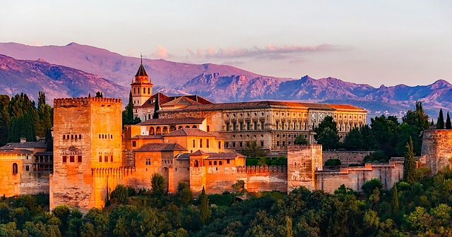
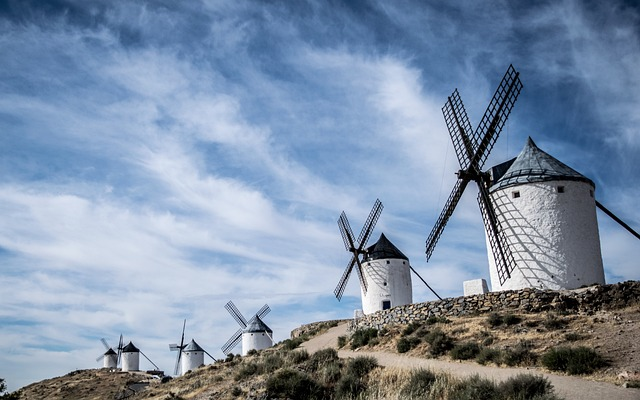

Geografía española
Historia de España
La geografía española es diversa y fascinante, con una rica variedad de paisajes, climas y regiones que la hacen única. Aquí hay 15 líneas que resumen algunos de los aspectos más destacados de la geografía de España:
España está ubicada en el suroeste de Europa, en la Península Ibérica, compartiendo fronteras con Portugal al oeste y Francia y Andorra al norte.
La geografía española está caracterizada por una gran diversidad de paisajes, desde playas de arena blanca en el sur hasta altas montañas en el norte, como los Pirineos.
La costa española es extensa, con más de 5.000 kilómetros de litoral que se extiende desde el Mar Mediterráneo hasta el Mar Cantábrico y el Océano Atlántico.
Las Islas Baleares y las Islas Canarias, dos archipiélagos españoles, son destinos turísticos populares conocidos por sus playas paradisíacas y su clima subtropical.
El clima en España varía desde mediterráneo en la costa y el sur, con veranos calurosos e inviernos suaves, hasta atlántico en el norte, con temperaturas frescas y abundantes precipitaciones.
La Meseta Central es una gran llanura elevada que ocupa gran parte del centro de España, y es conocida por su clima extremo con inviernos fríos y veranos calurosos.
Los ríos más importantes de España son el Tajo, el Duero, el Ebro y el Guadalquivir, que son vitales para la agricultura, la generación de energía y el suministro de agua.
Las sierras y montañas son características prominentes de la geografía española, como la Sierra Nevada en el sur, los Pirineos en el norte y la Cordillera Cantábrica en el noroeste.
El Sistema Central es otra importante cadena montañosa que atraviesa el centro de España, con picos como el Pico de Almanzor, el punto más alto de la sierra.
El Parque Nacional de Doñana, en el suroeste de España, es una reserva natural de humedales que es hogar de una gran diversidad de aves migratorias y especies en peligro de extinción.
La geografía española también cuenta con numerosos parques naturales y reservas, como los Parques Naturales de Cazorla, Segura y Las Villas en Andalucía, y el Parque Nacional de Garajonay en las Islas Canarias.
La geografía española es famosa por su producción de aceite de oliva, vino, frutas y verduras, gracias a su clima mediterráneo y suelos fértiles.
España es conocida por su arquitectura única, con ciudades emblemáticas como Madrid, la capital del país, Barcelona, famosa por la Sagrada Familia de Gaudí, y Granada, con su icónico palacio de la Alhambra.
La geografía española también incluye el Desierto de Tabernas en Andalucía, que es el único desierto de Europa y ha sido escenario de numerosas películas de western.

Lugares más destacados de la geografía española

La región de Castilla-La Mancha cuenta con numerosos molinos de viento, muchos de los cuales se han conservado y restaurado para su uso turístico y cultural. Los molinos se encuentran principalmente en la provincia de Ciudad Real, aunque también hay molinos en las provincias de Toledo, Cuenca y Albacete.
Los molinos manchegos tienen una estructura característica que consta de cuatro aspas y un cuerpo cilíndrico, construidos con materiales tradicionales como la madera, la piedra y el barro. Originalmente, estos molinos se utilizaban para moler el trigo y otros cereales, y eran impulsados por el viento que hacía girar sus aspas.
Actualmente, muchos de estos molinos se han convertido en museos, ofreciendo una experiencia auténtica de la vida en la Mancha en los siglos XVII y XVIII. En algunos de estos molinos, se pueden observar demostraciones de cómo se molía el trigo y se elaboraba la harina en los antiguos molinos.